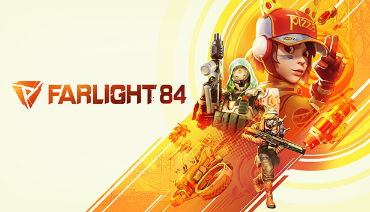
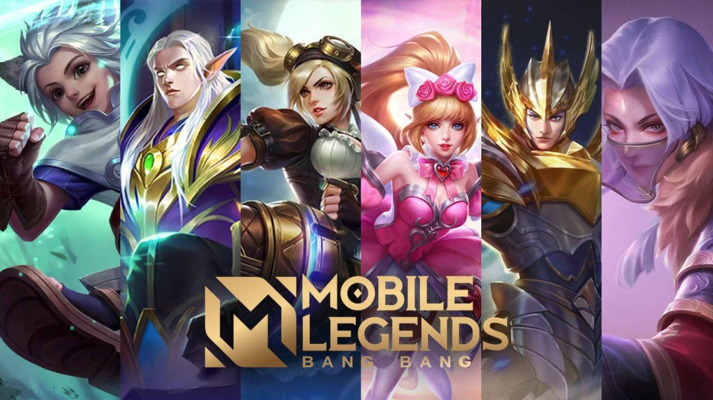

The gaming world is a vast and ever-evolving landscape, encompassing a wide range of platforms, genres, and experiences. From the casual mobile gamer to the competitive esports athlete, there is a place for everyone in the gaming world.

League of Legends (LoL) is a multiplayer online battle arena (MOBA) game developed and published by Riot Games for Microsoft Windows and macOS. Inspired by Defense of the Ancients, a Warcraft III mod, League of Legends was first announced in October 2009 and was released in October 2009. Since then, the game has become one of the most popular esports titles in the world, with millions of active players worldwide.
In League of Legends, two teams of five players compete against each other to destroy the other team's Nexus, a structure located in their base. Players control a powerful champion with unique abilities and playstyles. Each champion has strengths and weaknesses, and players must work together to overcome their opponents.
League of Legends is a fast-paced and strategic game that requires teamwork, communication, and individual skill. Players must work together to push lanes, take objectives, and teamfight to achieve victory. The game is also highly competitive, with players vying for rank in ranked mode and competing in professional tournaments.

Farlight 48 gameplay is a fast-paced, action-packed, and visually stunning experience. Players take control of a variety of unique characters and vehicles, battling it out in a variety of different game modes. The game features a large open world to explore, as well as a variety of different biomes to battle in.
One of the most unique aspects of Farlight 48 gameplay is its vehicle combat. Players can choose from a variety of different vehicles, each with its own unique abilities. From hoverbikes to tanks, there is a vehicle for every playstyle. Vehicle combat is fast and furious, and players will need to use all of their skills to survive.
Another unique aspect of Farlight 48 gameplay is its environmental destruction. Players can use their weapons and vehicles to destroy the environment around them, creating new strategic opportunities. For example, players can destroy bridges to cut off enemy reinforcements, or they can create craters to trap enemy vehicles.
Farlight 48 gameplay is also very team-oriented. Players will need to work together to defeat their opponents. This means coordinating attacks, sharing resources, and covering each other's backs. Teamwork is essential for success in Farlight 48.

Mobile Legends: Bang Bang is a multiplayer online battle arena (MOBA) game designed for mobile phones. The game is played between two teams of five players, each with a unique hero to control. Players must work together to destroy the enemy's base while defending their own.
The gameplay of Mobile Legends is similar to other MOBA games, such as League of Legends and Dota 2. Players control their heroes through a top-down perspective and use a variety of abilities to attack enemies and defend their base. The game is fast-paced and requires players to be quick on their feet and have good reflexes.
Here is a brief overview of the gameplay of Mobile Legends:
Select a hero: At the start of the game, each player selects a hero to control. There are over 100 heroes to choose from, each with their own unique abilities and playstyle.
Destroy the enemy base: The goal of the game is to destroy the enemy base. To do this, players must work together to push through the enemy's lanes and towers.
Defend your own base: While trying to destroy the enemy base, players must also defend their own base from enemy attacks.
Use your abilities wisely: Each hero has a unique set of abilities that can be used to attack enemies, defend your base, and support your teammates.
Work together as a team: Communication and teamwork are essential for success in Mobile Legends. Players must work together to coordinate their attacks and defend their base.
Mobile Legends is a challenging but rewarding game that can be enjoyed by players of all skill levels. It is a great way to test your skills and teamwork abilities.
Here are some additional tips for playing Mobile Legends:
Understand the different roles: There are five different roles in Mobile Legends: Tank, Fighter, Assassin, Mage, and Marksman. Each role has its own unique strengths and weaknesses. It is important to understand the different roles so that you can choose the right hero for your team composition.
Farm creeps: Creeps are neutral monsters that spawn in the lanes of the map. Killing creeps gives you gold and experience, which are essential for leveling up and becoming stronger.
Destroy towers: Towers are powerful defensive structures that protect the enemy base. Destroying towers will allow you to push further into enemy territory and get closer to the enemy base.
Take objectives: Objectives such as Turtle and Lord give your team a significant advantage. It is important to focus on taking objectives as a team in order to win the game.
With practice, you will be able to master the gameplay of Mobile Legends and become a skilled player.
 09666666666
09666666666 Lucena City
Lucena City lcyfer01@gmail.com
lcyfer01@gmail.com Facebook
Facebook Instagram
Instagram